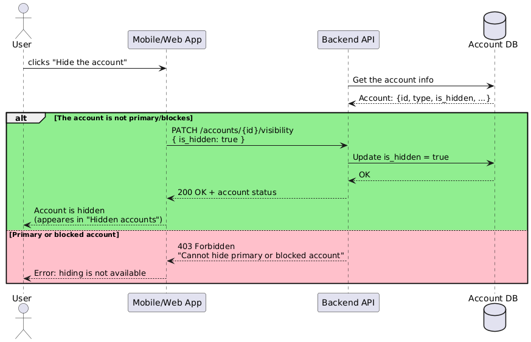
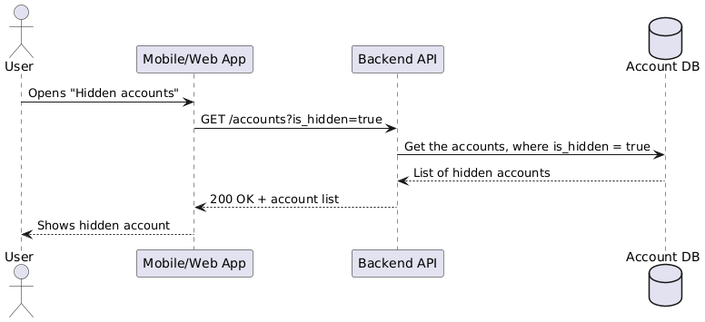
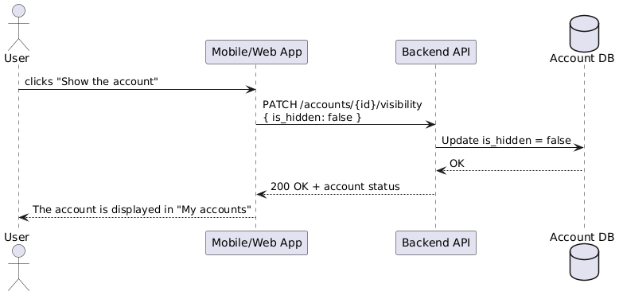

The case involved collecting and describing requirements for a new feature of the Bank's mobile app - the ability to hide an account in the user's personal account.
Toolkit:
| Collection and description of requirements (BRD&SRS) | Use case/User stories |
| UML | Figma |
| REST API |
Goal: to increase customer satisfaction (NPS) for those who have used the feature, and reduce the number of support requests regarding account hiding.
Result: projected NPS increase of +10% within 3 months and a decrease in the number of requests of -15% within 2 months after implementation.
Summary
Description of a new feature for the Internet banking application: the ability to hide accounts in the user's personal account. The feature allows the user to customize the interface by hiding irrelevant accounts, improving navigation and perception of the personal account The terms used in this document are provided in the SRS document for this feature.
Project goals
| Goal | Metric | Target value | Deadline | Monitoring |
|---|---|---|---|---|
| Increase satisfaction | NPS of users who used hiding | +10% to the current level | 3 months after release | Through surveys, in-app reviews, contact center |
| Reduce requests | Number of support tickets for displaying accounts | -15% of the current level | In 2 months | Through the ticket system/td> |
Project history
Clients often open accounts for specific purposes: savings, transfers, purchases. Some become obsolete but are not closed. This leads to interface overload and complicates the perception of information. A large amount of information can be collected in the personal account in the application. The personal account looks cluttered and inconvenient to use.
Stakeholders
Time: according to the preliminary estimate of the development team, the implementation period is from 2 to 4 weeks at the current workload. The estimate is specified after the requirements are finalized.
Budget: the cost of the development team's work, testing, implementation within 1 month; cost of new required capacities
Project scope:
1. Implementation of the function of hiding accounts from the main screen of the Internet bank.
2. Ability to return the hidden account to display.
3. Displaying the hidden account in a separate list.
Limitations
1. The user does not have the ability to hide blocked accounts.
2. The user does not have the ability to hide the primary account.
3. The hidden account retains all the functionality of the active account, including transfers,
replenishment and viewing the history of transactions, hiding does not mean blocking the account.
User Stories:
1. As a user with many outdated accounts, I want to hide them from the interface so I don't waste time
scrolling through them and don't make a mistake when transferring.
2. As a user, I want to be able to view a hidden account so I don't lose access to the information if I need
it again.
3. As a user, I want to see hidden accounts in a separate section so I can quickly restore the display if
needed.
Use cases:
UC-1: Hiding an account
UC-2: Ability to view hidden accounts
UC-3: Ability to return a hidden account to the main screen (the account is displayed again in the general
"My accounts" list)
UC-4: Error when trying to hide a primary / blocked account (When trying to hide a primary or blocked
account, a notification appears with the text "Unable to hide the account" and an "OK" button.)
Preliminary prototype of the new functionality:
Product requirements
Functional requirements:
FR.1: Ability to hide the display of an account (except for the primary and blocked one) in the user's personal account in application
FR.2: Ability to return the display of a hidden account
Non-functional requirements
NFR.1: Hiding/returning the display of an account should not take longer than 1 second in the application. The account display (including hiding/returning) should be without noticeable delay with a weak internet connection and under high server load conditions.
NFR.2: Security: hiding the account does not affect access to transactions, there is no data leakage.
NFR.3: Cross-platform support: works on iOS and Android.
NFR.4: Reliability: The hiding state is saved when the application is restarted.
Acceptance criteria:
CR.1:The user can hide the account by performing no more than 3 actions: 1) click on the account card, 2) select "Hide account", 3) confirm.
CR.2:There is no data loss during the process of hiding the account.
CR.3: Hiding and restoring an account takes less than 1 second.
Release plan:
1. Step-by-step release plan
2. Post-release monitoring
3. Bug Support
Specification of the new functionality for hiding an account in the Bank's mobile application
1. Introduction
The purpose of the document is to describe the requirements for developing the functionality of hiding accounts in the mobile and web application of Internet banking. This feature allows the user to customize the display of their accounts in the interface, hiding irrelevant or temporarily unnecessary ones.
| Term | Definition |
|---|---|
| User | Individual, bank client, authorized in the application |
| Account | User's bank account |
| Primary account | Account used by default for deposits |
| Blocked account | Account on which a restriction has been imposed (for example, by a court decision) |
| Personal account | User interface in Internet banking |
2. General description
The functionality is part of the bank's mobile and web application. Account data is loaded from the backend service, changes in the status "hidden/displayed" are saved in the DB.
3. Functional requirements
Description: the user can hide the display of the selected account in the general list of accounts, if this account is not the primary or blocked.
Functionality:
Exceptions:
API request: PATCH /accounts/{id}/visibility
Request: { "is_hidden": true }
Response:
| 200 OK: | { "id": "acc_12345", "is_hidden": true, "message": "Account successfully hidden" } |
| 400 Bad Request: | { "error": "Invalid account ID format" } |
| 401 Unauthorized: | { "error": "Authentication required" } |
| 403 Forbidden: | { "error": "Cannot hide primary or blocked account" } |
| 404 Not Found: | { "error": "Account not found" } |
| 500 Internal Server Error: | { "error": "Unexpected server error. Please try again later." } |
Description: the user can open the list of all hidden accounts in the "Account settings" section or a separate "Hidden accounts" screen.
API request: GET /accounts?is_hidden=true
Response:
| 200 OK: | { "id": "acc_12345", "accountNumber": "40817810000001234567", "currency": "BYN", "balance": 1000.50, "isHidden": true }, { "id": "acc_67890", "accountNumber": "40817810000007654321", "currency": "USD", "balance": 500.00, "isHidden": true } |
| 400 Bad Request: | { "error": "Invalid account ID format" } |
| 401 Unauthorized: | { "error": "Authentication required" } |
| 403 Forbidden: | { "error": "Access to account information is forbidden" } |
| 404 Not Found: | { "error": "Account not found" } |
| 500 Internal Server Error: | { "error": "Unexpected server error. Please try again later." } |
Description: the user can return the display of a previously hidden account in the general list.
API request: PATCH /accounts/{id}/visibility
Request: { "is_hidden": false }
Response:
| 200 OK: | { "id": "acc_12345", "is_hidden": false, "message": "Account is now visible" } |
| 400 Bad Request: | { "error": "Invalid account ID format" } |
| 401 Unauthorized: | { "error": "Authentication required" } |
| 403 Forbidden: | { "error": "Access to account information is forbidden" } |
| 404 Not Found: | { "error": "Account not found" } |
| 500 Internal Server Error: | { "error": "Unexpected server error. Please try again later." } |
4. Non-functional requirements
NFR.1: Performance: Hiding/revealing the account should not take longer than 1 second in the application.
NFR.2: Security: Hiding the account does not affect access to transactions, there is no data leakage.
NFR.3: Cross-platform support: works on iOS and Android.
NFR.4: Reliability: The hiding state is preserved when the application is restarted
5. Behavior options
Positive scenario:
1. The user clicks "Hide account"
2. A message appears: "After hiding the account, it will be available on the main page in the
"Hidden accounts" section."
3. The account is moved to the "Hidden accounts" category
Negative scenarios:
1. The user tries to hide the primary account → message: "Unable to hide the primary account."
2. The user tries to hide a blocked account → message: "Unable to hide a blocked account."
3. Server error → message: "Failed to hide the account. Try again later."
6. Interfaces
6.1 User interface
6.2 Interaction with the backend
7. Additional information
7.1 User documentation:
FAQ: «How to hide an account»
7.2 Assumptions:
7.3 Scalability:
The hiding functionality can be extended to other products (cards, deposits) using the general is_hidden flag mechanism.